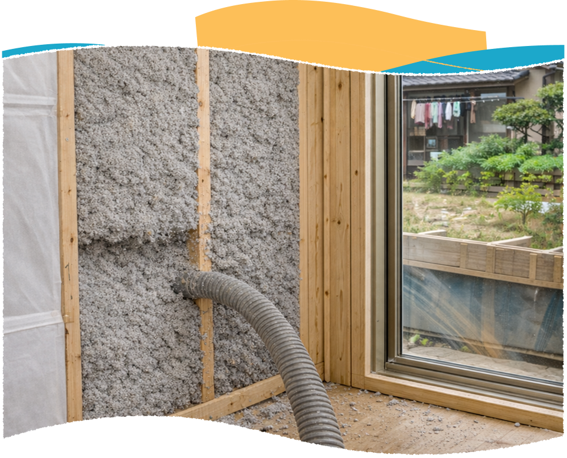
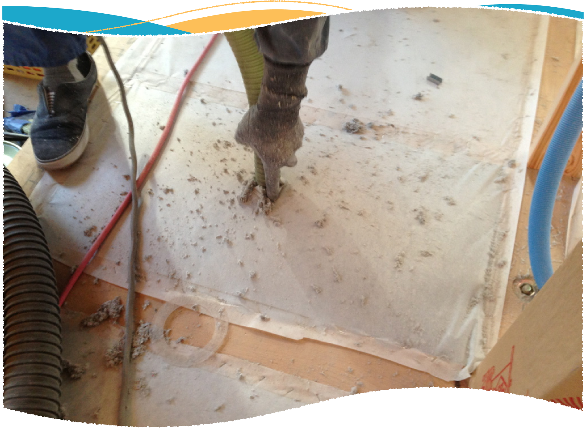
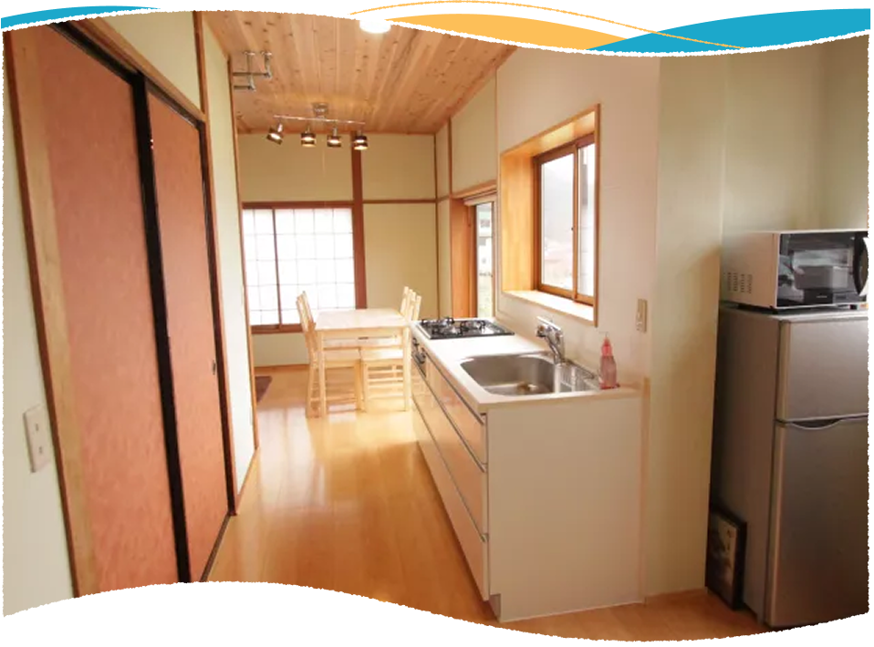
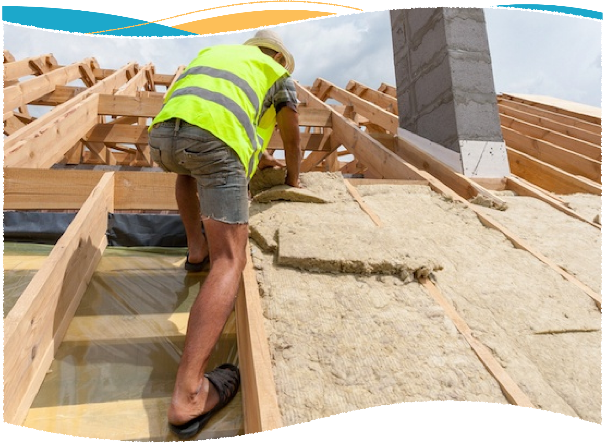

セルロースファイバー断熱・防音工事
自然のぬくもりで、毎日をもっと快適に
断熱・防音工事

セルローズファイバーとは
セルローズファイバーは、新聞紙などの再⽣紙を主原料とした⾃然素材の断熱材です。
紙と聞くと「燃えやすいのでは︖」と思われがちですが、実はとても安全で、断熱・防⾳・調湿・防⽕の4つの性能を兼ね
備えています。
住宅等に幅広く採⽤されている、環境にも⼈にもやさしい断熱材です。
セルロースファイバーの特長
1. 夏はひんやり、冬はぽかぽか
外の暑さ・寒さをやさしくブロック。
2. 音をふんわり吸収
⾜⾳や話し声が伝わりにくく、静かに過ごせる。
3. 湿気をほどよく調整
結露やカビを防いで、家が⻑持ち。
4. 紙なのに燃えにくい安心素材
ホウ酸の力で、火が広がりにくい。
5. 地球にやさしいエコ素材
新聞紙を再利用した、人にも環境にもやさしい断熱材。
施工方法と流れ
【吹き込み工法（ブローイング工法）】
専⽤の機械を使って、壁や天井の中にセルローズファイ バーをふわっと吹き込み、隙間なくしっかり詰めていく ⼯法です。リフォームでも施⼯でき、複雑な形状の空間にも 均⼀に充填できます。
【施工の流れ】
現地調査・断熱診断 → 施⼯計画のご提案 → 仕上がり確認
アフターフォロー


一般住宅での導入メリット
-
快適な住環境を実現
冬の底冷えや夏の暑さを軽減し、家全体が快適に。
⽣活⾳も抑えられ、プライバシーが守られます。 -
光熱費の削減断熱性能が⾼いため、冷暖房効率が向上し、年間の光熱費を
抑えることができます。 -
⼦育て世帯にも安⼼⼦どもの⾜⾳や泣き声が響きにくく、在宅ワークの集中環
境にも最適です。
公共施設での導⼊メリット
-
学校・保育施設教室間の騒⾳を軽減し、学習環境を向上。
体育館や⾳楽室の⾳漏れ対策にも有効です。 -
オフィス・庁舎会議室の防⾳性向上や、省エネ効果による運⽤コスト削
減に貢献します。 -
医療・福祉施設プライバシー確保のための防⾳対策として有効。
快適な温度環境で利⽤者の負担を軽減します。

お問い合わせ
Contact
ご質問などありましたら、お電話・
お問い合わせフォームより受け付けております。